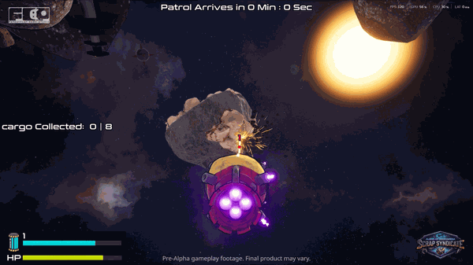
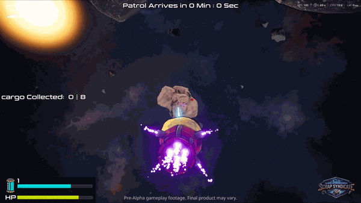

AOA: Space Scrap Smugglers
Role: Contract Game Designer • Studio: FatCatPlay (Team: 12+) • Duration: 3 Months • Engine: Unreal Engine 5
The Hook • Proven Result
Emergent physics co-op gameplay that forced verbal and non-verbal player coordination, cutting player "lonewolfing" by 50% in playtests.
The Design Challenge
Designing co-op synergy where players must physically depend on each other without overloading them with complex controls, high-cognitive friction, or intrusive text tutorials.
Craft & Design Execution
View Design Case Study ↗
- Spatial Layout Grayboxing: Designed top-down spatial graybox maps utilizing a Hub-and-Spoke layout to naturally converge player paths and force cooperative hand-offs.
- Textless Diegetic Onboarding: Utilized environmental lighting, silhouette contrast, and physical affordances to teach mechanics without hand-holding tutorial prompts.
- Live Production GDDs: Authored comprehensive Game Design Documents that aligned multidisciplinary artists and programmers during fast-paced agile sprints.